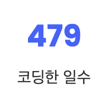

개발자 GitHub 포트폴리오 사이트 만들기 01 - 내가 코딩한 일수 자동 계산하기
제작목적
- 웹 개발을 공부하며 첫 번째 프로젝트를 끝내고 나니까 이걸 잘 포장해서 보여줘야 할 필요가 생겼다. 즉 포트폴리오 문서가 필요해진 것!
- 포트폴리오 문서는 서류 형식으로도 만들 것이지만 나는 웹 개발을 공부하고 있으니까 나의 포트폴리오를 보여줄 웹 사이트도 만들기로 결정했다. 기본적인 기능이 다 구현되어 있는 무료 템플릿을 쓰겠지만 그걸 나에게 맞게 수정하는 과정에서도 배울 점이 많을 것이다.
진행상황
- 템플릿은
GiHhub레포지토리에 무료로 공개되어 있는congchu님의 템플릿을 사용했다. - https://github.com/congchu/web-porfolio
GitHub을 써 보았다면fork에서 로컬 저장소에 다운받기까지는 쉽게 할 수 있다. 몰라도Readme에 친절하게 설명되어 있다.
index.html - 내가 코딩한 일수 수정
- 가장 먼저 이름을 수정하고 쭉 보다보니
내가 코딩한 일수를 기록하는 란이 있었다.

<div class="text">
<strong id="codingDays" class="number" data-number="365">0</strong>
<span>코딩한 일수</span>
</div>
- 코드 상의 기본 데이터는
365로 설정되어 있다. - 이걸 내가 코딩한 날짜로 바꿔주면 되는데 이걸 일일이 계산하는 것은 정말 번거로운 작업이다.
- 날짜 하나를 정해서 박아놓으면 수동으로 업데이트 해 줘야 하는데 귀찮고 손이 많이 가니까… 고등 교육을 받은 현대인이니까 시간이 흐름에 따라 알아서 업데이트 되게 해 줄 것이다.
<script src="js/main.js"></script>
- 밑에 내려 보니까
main.js파일을 수정하면 될 거 같아서 여기로 이동했다.
main.js
function countDate()
{
var startDate = new Date(2020, 11, 14); // 시작일
var today = new Date(); // 오늘
var total = new Date(); // 경과시간
total.setTime((today.getTime() - startDate.getTime()) / 1000 / 60 / 60 / 24);
$('#codingDays').attr('data-number', total.getTime());
}
- 시작일로부터 오늘까지 경과한 일수를 계산하는 함수를 작성했다. 간단해 보이지만 자바스크립트로 날짜 계산하는 함수를 쓴 지 오래되서 구글링을 열심히 해야했다…ㅎ
(function($) {
"use strict";
$(window).stellar({
responsive: true,
parallaxBackgrounds: true,
parallaxElements: true,
horizontalScrolling: false,
hideDistantElements: false,
scrollProperty: 'scroll'
});
countDate();
}
- 그리고
jQuery시작 함수 안에서 호출하면 끝!

- 계산 잘 된다! 😄